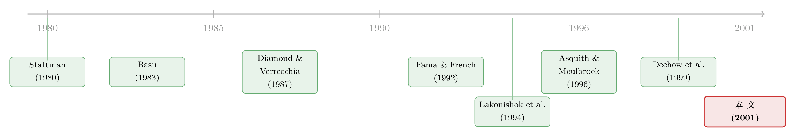

做空的人，到底在赌什么？——一份藏在「基本面比率」里的答案
本文读的是 Dechow, Hutton, Meulbroek & Sloan (2001, Journal of Financial Economics)：低「基本面/价格」比率（E/P、B/M、现金流/价格、价值/价格都低）的股票，未来收益系统性偏低；而做空者恰恰把仓位精准地建在这类股票上，等比率均值回归、价格跌回基本面后再平仓。换句话说，做空者像是拿着这几个比率当地图，专门去做空「被高估」的股票，并且会精打细算地绕开那些「贵但难空」的票。
1 一个老问题，和一个被忽略的角度
关于做空者，市面上有两套截然相反的形象。一套是华尔街的反派：靠散布坏消息把股价往下砸的投机客，监管层为此设了「升档交易（plus-tick rule）」、卖空所得不能挪用、还要按短期资本利得纳税——条条都在抬高做空的成本。另一套则是教科书里的「聪明钱」：他们承担了远高于做多的风险与成本，因此 Diamond and Verrecchia (1987) 推断，没有十足把握、不指望股价跌得足够多来补偿这些成本，他们根本不会出手；所以做空者平均而言应当比做多者掌握更多信息。
Asquith and Meulbroek (1996) 给第二套形象添了一块硬证据：被大量做空的股票，随后确实跑输市场。可问题是——他们到底是怎么挑出这些股票的？ 做空者不会把交易笔记交给学术界。我们能看到的，只有一个滞后、粗糙的「空头持仓占流通股比例」。本文的全部巧思，就在于：既然挑票的过程看不见，那就反过来，从一组早已被证明能预测收益的公开比率出发，去检验做空者的仓位是不是正好踩在这些比率上。
首先要承认一件事：这是一篇把会计估值和卖空交易焊接在一起的论文。它的两位作者 Dechow 和 Sloan，正是「基本面/价格比率能预测收益」这条文献的主力。于是一个自然的问题是：如果连学者都能用 Compustat 上的几个数算出哪些股票「贵」，那些真金白银下注的做空者，是不是早就在这么干了？
2 那几把「丈量便宜」的尺子
本文用了四个「基本面对市价」的比率，全部是把会计上的「内在价值」估计除以市价：
- 盈利价格比 (earnings-to-price, E/P)；
- 现金流价格比 (cash-flow-to-price, C/P)，其中现金流 = 盈利 − 应计项 (accruals)，沿用 Sloan (1996) 的拆法；
- 账面市值比 (book-to-market, B/M)；
- 价值市值比 (value-to-market, V/M)。
前三个是「老熟人」，无需多言。真正讲究的是第四个 V/M——它来自 Ohlson (1995) 的剩余收益估值，也是这篇论文与一般「价值股」研究最不一样的地方。
在股利贴现框架下，公司价值可以写成账面价值加上未来「超常盈利（abnormal earnings）」的现值：
$$ P_t = b_t + \sum_{\tau=1}^{\infty}\frac{E_t\!\left[x^a_{t+\tau}\right]}{(1+r)^{\tau}} $$
其中 \(b_t\) 是 \(t\) 时点普通股账面价值，超常盈利 \(x^a_{t+\tau} = \text{Earnings}_{t+\tau} - r\,b_{t+\tau-1}\)，\(r\) 是权益资本成本。接着，关键的一步是 Dechow, Hutton and Sloan (1999) 的简化：把超常盈利设成一个一阶自回归过程，
$$ x^a_{t+1} = \omega\, x^a_t + \varepsilon_{t+1} $$
于是那个吓人的无穷求和就坍缩成一个干净的闭式：
$$ P_t = b_t + \alpha\, x^a_t, \qquad \alpha = \frac{\omega}{1+r-\omega} $$
这条式子是整篇论文估值的「心脏」，值得逐项拆开看：
这里的妙处全在 \(\omega\) 这个持续性参数上。当 \(\omega = 1\)，超常盈利永不衰减，模型退化成纯盈利模型；当 \(\omega = 0\)，超常盈利转瞬即逝，模型退化成纯账面价值模型。 二者之间的连续地带，就是 E/P 和 B/M 之外的新信息。Dechow et al. (1999) 实测出平均 \(\omega \approx 0.6\)，并把 \(r\) 设为长期 ROE 的 12%。本文照搬这套做法：每一年都用截至当年的所有历史数据滚动回归
$$ x^a_{i,t-1} = a_0 + \omega\, x^a_{i,t-2} + \varepsilon_{i,t-1} $$
来估 \(\omega\)，再算出每家公司的 V/M。这样做的好处是——它只用做空者当时真能看到的信息，不偷看未来。
为什么不直接用 B/M 就好？因为 V/M 把「账面价值」和「盈利能力」揉进了同一个数。两家 B/M 相同的公司，若一家正在赚超常利润、一家在毁灭价值，V/M 会把它们分开。论文后面会用到这一点：做空者要的，正是这种「分得更细」的尺子。
3 把仓位摊在阳光下：识别策略
本文没有 DiD、没有 IV，它的「识别」其实是一套组合排序 + 时间序列推断的描述性设计，但做得相当克制。
第一步，先复刻 Asquith and Meulbroek (1996) 的结论。把 34,037 个公司-年按空头持仓占流通股比例分成六档，对每一档、每一个日历年算一个一年期超常收益（用 NYSE/AMEX 等权收益做基准，不做任何风险调整——作者明说这会让结果偏向「错误定价」解释），再把 18 个年度均值平均起来。结果是单调的：无空头持仓的股票平均超常收益 +2.3%，而被做空超过 5% 流通股的股票，平均超常收益是 −18.1%。 全样本里有 36.6% 的公司-年根本没有空头，约 46% 只有微不足道的空头（0%–0.5%），分布高度右偏——不到 2% 的公司-年空头超过 5%。
这就引出一个度量上的选择：本文把空头超过 0.5% 流通股的公司定义为「高空头（high short）」，其余为「低空头」。为什么不取「非零」？因为小于 0.5% 的空头多半是对冲、配对交易、可转债套利留下的噪声，并非「这股票被高估了」的共识。聚焦高空头，是为了提高检验的功率。这个 0.5% 是任意的，但作者验证了换成 1% 或 2.5% 结论不变。在统计上，所有空头超过 0.5% 的公司，时间序列平均超常收益 −3.5%（标准误 0.009，0.001 水平显著）；那些 0.5%–5% 之间的「温和高空头」也有 −2.4%（标准误 0.012，0.06 水平显著）。
这里有一个绕不开的内生性隐忧：空头持仓和基本面比率，在日历时间上都随着资本市场放松管制、对冲基金扩张而趋势上升（论文 Fig. 1 即是空头比例的时间序列）。两条都在涨的序列，相关性会被序列自相关人为夸大。作者用 Newey and West (1987) 式的时间序列标准误来处理这种自相关——这是本文推断里最该被盯紧的一环。
接着，一个自然的问题是：做空者的仓位，是不是正好落在 E/P、B/M、C/P、V/M 都低的那一格？本文把公司按每个比率、每个日历年分成十档，再看高空头公司在各档里的分布。核心发现一句话就能说清——做空者系统性地超配在低比率（被高估）的那一端，并随着比率向正常水平回归而平仓。 这正是「建仓—等回归—平仓」的完整动作。
4 真正关键的一步：做空者比「会算账」更精明
如果论文到此为止，它不过是给「价值异象」加了一个交易者注脚。真正让它立得住的，是后面三个「精修」（refinements）——做空者不仅会算哪只股票贵，还会算哪只贵得「值得空」。
精修一：绕开交易成本高的票。 做空的成本不是均匀的。流动性差、机构持股低、容易被「逼空（short squeeze）」的小盘股，借券难、平仓贵。论文发现，即便基本面比率一样低，做空者也会回避这些难空的股票，转而集中在大盘、高机构持股、易借券的标的上。亚马逊 1998 年那场逼空——空头几乎吃光了全部流通盘，公司一宣布拆股，多空双方一起抢券，股价暴涨——就是做空者最怕的噩梦。
精修二：用比率之外的信息加码。 做空者并不只盯着这四个比率。论文显示，在控制了基本面比率之后，空头持仓仍然对未来收益有独立的预测力。也就是说，他们掌握了一些比率之外、却同样能预测下跌的私有信息。
精修三——也是最漂亮的一招：分清「分母大」还是「分子小」。 一个比率（比如 E/P）低，可能是因为价格（分母）被炒高了，也可能是因为当期盈利（分子）暂时偏低。前者是真高估，值得做空；后者只是盈利的一次性坑，价格其实没错。论文发现，当低比率是由「暂时偏低的基本面」造成时，做空者会避免去空它。 换句话说，做空者表现得像是能够区分「价格暂时太高」和「盈利暂时太低」——这是一个纯靠机械排序的量化策略很难做到的判断。
于是反转出现了：做空者不是「价值因子」的提线木偶，而是拿着同一套公开比率、却比比率本身更会用它的人。
5 错误定价，还是风险？——一通电话打过去
所有这类研究最后都躲不开同一个分叉口：低基本面比率的股票收益低，到底是因为它们被高估了（Lakonishok, Shleifer and Vishny, 1994 的「天真投资者过度乐观」假说），还是因为它们风险低、本就该有低收益（Fama and French, 1992 的「B/M 是风险因子」假说）？
这两种解释在数据上很难掰开，因为本文的超常收益压根没做风险调整。作者于是做了一件经济学论文里少见的事——直接打电话问。他们按 Managed Accounts Report 的排名找到全球最大的十家做空对冲基金，九家回应，无一例外地认同「我们做空的是被暂时高估的股票」，并明确否认自己是在偏好某种风险因子。当然，他们也可能在「不知不觉」中加载了某个未被识别的风险（这是作者诚实保留的第二种风险解释），但这些用千万美元真金白银「用脚投票」的人一致拒绝风险解释，本身就为「错误定价」一方增添了分量。
（关于「价值异象到底是风险还是错误定价、以及套利者为何不把它抹平」，可参见《无风险的钱没人捡，是因为捡它的人也会怕——重读「套利风险」与价值溢价》；关于把卖空当成一种「信息投票」，可参见《把卖空看成一次「投票」：钱投得准不准，藏着市场下个月的方向》。)
6 文献脉络
这条线索其实是两条河的交汇。
一条河是「基本面/价格比率预测收益」。它从最朴素的比率起步——Stattman (1980)、Rosenberg, Reid and Lanstein (1985) 的 B/M，Basu (1983) 的 E/P——在 Fama and French (1992) 那里被推上「风险因子」的高度，又被 Lakonishok, Shleifer and Vishny (1994) 重新解读为「天真投资者的过度外推」。与此同时，Sloan (1996) 揭示应计项里藏着被市场忽视的信息，Ohlson (1995) 给出剩余收益估值框架，Dechow, Hutton and Sloan (1999) 把它落地成可计算的 V/M。
另一条河是「卖空」。早期 Figlewski (1981)、Brent, Morse and Stice (1990)、Figlewski and Webb (1993) 都没能找到空头与收益的稳健关系；Diamond and Verrecchia (1987) 从理论上论证了做空者应是知情者；直到 Asquith and Meulbroek (1996) 用「只看大空头」的样本，才把这条关系钉实。
本文站在两条河的汇流处：它问的不是「比率能不能预测收益」，也不是「空头能不能预测收益」，而是「知情的做空者，是不是正是靠这些比率在交易」。

7 评论与延伸（Q&A + 研究方向）
(a) 几个可能的疑问
Q：不做任何风险调整，会不会把结论做「虚」了？
会，而且作者明知故犯。他们坦言这种等权基准调整「可能让结果偏向错误定价解释」。但他们的辩护是：前人已反复证明，这几个基本面比率的可预测收益对各种风险调整方法都稳健，所以即便换更严的基准，符号也难翻转。真正的软肋不在风险调整，而在那个一致下注却无法被观测到的「未识别风险因子」。
Q：空头持仓和基本面比率都在长期上升，这种相关会不会是假的？
这是最该警惕的一点。两条同向趋势的序列天然有高相关。作者用 Newey-West 式时间序列标准误来吸收序列自相关，并把检验落在「日历年的横截面排序」而非纯时序回归上，以此削弱共同趋势的污染。但这终究是描述性证据，不是因果识别。
Q：和 Asquith-Meulbroek 比，本文新在哪？
Asquith-Meulbroek 回答的是「大空头能不能预测低收益」（能）；本文回答的是「做空者用什么挑票」（基本面比率），并进一步揭示他们如何精修——避开高成本的票、用比率外信息加码、区分分子与分母。后者才是本文真正的增量。
Q：为什么要费劲引入 V/M，B/M 不够吗？
因为 V/M 把账面价值和盈利持续性 \(\omega\) 揉进同一个数，能区分「便宜得有道理」和「便宜得危险」的股票。它正好服务于精修三——做空者要分清低比率是价格太高还是盈利太低，而一个纯 B/M 做不到这种区分。
Q：做空者「能区分分子和分母」，会不会只是事后讲故事？
这是合理的质疑。论文的证据是：当低比率由暂时偏低的基本面驱动时，空头持仓显著更少。这是一个可证伪的横截面模式，不是纯叙事；但它依赖于「暂时性」的事前度量，而这恰恰最难干净地构造，留有解释空间。
Q：这篇 2001 年的结论，在今天还成立吗？
样本止于 1993 年，借券市场、卖空管制（升档规则已废止）、对冲基金生态都已天翻地覆。更重要的是，价值异象本身近二十年明显衰减。所以它更像一份「历史快照」：在那个年代，知情做空者确实在用基本面比率交易；今天是否依旧，需要新数据重做。
(b) 几个可能的研究问题与提案
1. 把同一套逻辑搬到公司债/信用市场。 【经济故事】股票的「基本面/价格比率」对应到债券，就是「基本面隐含的违约风险 vs. 信用利差」。如果某只债的利差相对其基本面违约概率「过窄」（被高估），知情的信用做空者（通过 CDS 或债券借券）是否会建仓？这是把 Dechow et al. 的框架平移到信用市场。 【可行性】中。需要 TRACE 债券交易、Markit CDS、以及债券层面的空头/借券数据（如 Markit Securities Finance）。识别上可借鉴本文的「组合排序 + 时序标准误」，但债券流动性差、借券数据稀疏是硬约束。
2. 外资做空者 vs. 本地做空者，谁更会「挑分母」？ 【经济故事】本文的精修三——区分价格太高与盈利太低——本质是一种本地的、会计层面的精细判断。外资做空者可能在「价格信号」上灵敏，却在「盈利的暂时性」上吃亏。把空头持仓按投资者类型拆开，可检验信息优势的来源。 【可行性】中偏低。需要带交易者国籍标签的卖空数据，目前只有少数市场（如韩国、台湾的逐笔卖空）提供，样本受限。
3. 借券成本作为「交易成本」的直接度量，重做精修一。 【经济故事】本文用流动性、机构持股间接代理「做空成本」。如今有了直接的借券费率（loan fee / specialness），可以更干净地检验：做空者是否在基本面信号相同时，被借券费率「劝退」。 【可行性】高。Markit Securities Finance 提供 2002 年后的逐日借券费率，与基本面比率、空头持仓可直接合并，识别清晰。这几乎是本文精修一的现代化复刻。
4. 把「价格太高」与「盈利太低」做成可交易的双重排序策略。 【经济故事】如果做空者真能区分两类低比率股票，那么「低比率 + 价格驱动」组与「低比率 + 盈利驱动」组的未来收益应当显著分化。把这种分化做成一个多空组合，既检验本文机制，又可能是一个真异象。 【可行性】高。纯 Compustat + CRSP 即可构造，无需卖空数据，唯一的难点是干净地事前度量「暂时性盈利」。
我的判断
这篇论文的贡献，不在于又验证了一遍价值异象，而在于它把一个抽象的「聪明钱」假设落到了可观测的仓位上：做空者确实在用公开的基本面比率交易，而且用得比比率本身更聪明——会避开贵但难空的票、会用比率外的信息、会分清便宜的两种来源。「精修三」尤其漂亮，它把做空者从「价值因子的搬运工」提升为「有判断力的估值者」。再加上那通打给十家对冲基金的电话，让风险 vs. 错误定价的争论第一次有了从业者的直接声音——这在 2001 年是相当有想象力的做法。
对识别的担忧也很清楚：全篇是描述性证据，没有外生冲击；空头与比率的共同时间趋势靠时序标准误硬扛，而非真正切断；超常收益不做风险调整，使「错误定价」与「未识别风险」始终无法被干净地分开——作者对此是诚实的，但诚实不等于解决。
后续我最想看到的，是把这套逻辑用现代借券费率数据重做一遍：当「做空成本」从间接代理变成逐日可观测的价格，精修一就能被精确检验；同时把它推向公司债与 CDS 市场，看知情做空在信用市场是否同样沿着「基本面/利差」的尺子布阵。那将是这篇 1993 年止步的论文，最自然、也最有价值的续篇。
参考文献
Asquith, P., Meulbroek, L. (1996). An empirical investigation of short interest. Unpublished working paper, Harvard University.
Basu, S. (1983). The relationship between earnings yield, market value, and return for NYSE common stocks: further evidence. Journal of Financial Economics 12, 129–156.
Brent, A., Morse, D., Stice, E. K. (1990). Short interest: explanations and tests. Journal of Financial and Quantitative Analysis 25, 273–289.
Dechow, P. M., Hutton, A. P., Meulbroek, L., Sloan, R. G. (2001). Short-sellers, fundamental analysis, and stock returns. Journal of Financial Economics 61(1), 77–106.
Dechow, P. M., Hutton, A. P., Sloan, R. G. (1999). An empirical assessment of the residual income valuation model. Journal of Accounting and Economics 34, 1–34.
Diamond, D. W., Verrecchia, R. E. (1987). Constraints on short-selling and asset price adjustment to private information. Journal of Financial Economics 18, 277–311.
Fama, E. F., French, K. R. (1992). The cross-section of expected stock returns. Journal of Finance 47, 427–465.
Figlewski, S. (1981). The information effects of restrictions on short sales: some empirical evidence. Journal of Financial and Quantitative Analysis 16, 463–476.
Lakonishok, J., Shleifer, A., Vishny, R. W. (1994). Contrarian investment, extrapolation, and risk. Journal of Finance 49, 1541–1578.
Newey, W. K., West, K. D. (1987). A simple, positive semi-definite heteroskedasticity and autocorrelation consistent covariance matrix. Econometrica 55, 703–708.
Ohlson, J. (1995). Earnings, book values, and dividends in security valuation. Contemporary Accounting Research 11, 661–687.
Rosenberg, B., Reid, K., Lanstein, R. (1985). Persuasive evidence of market inefficiency. Journal of Portfolio Management 11, 9–17.
Sloan, R. G. (1996). Do stock prices fully reflect information in accruals and cash flows about future earnings? The Accounting Review 71, 289–315.
Stattman, D. (1980). Book values and stock returns. The Chicago MBA: A Journal of Selected Papers 4, 25–45.